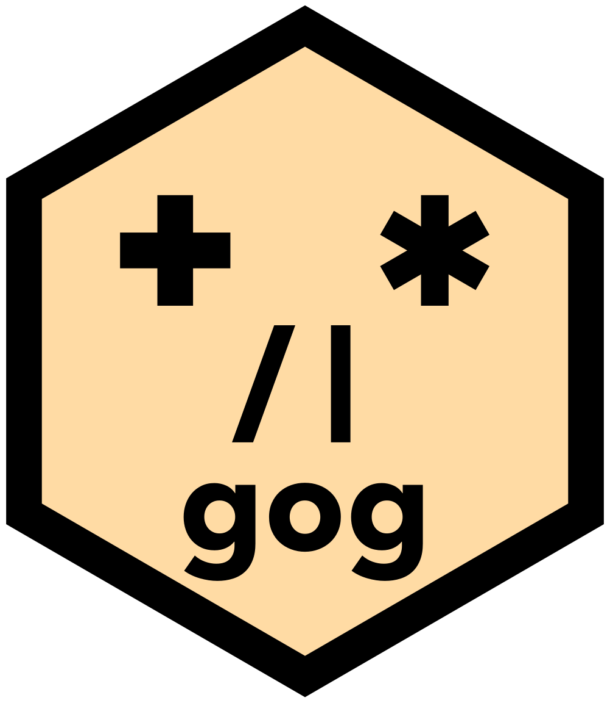
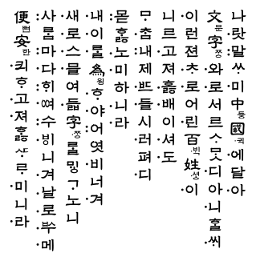
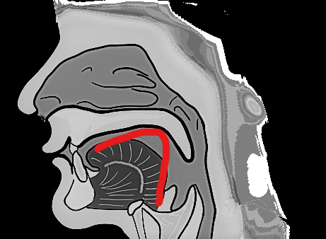

data(gapminder_2007) + bar * bin + x(life)data(gapminder_2007) + bar * bin + x(col.life)data(gapminder_2007) + bar * bin + x(:life)plot(data(gapminder_2007), layer(bar, bin), x(col.life))One engine. Every language.

Be agog. Use gog.

gog is a single graphics engine written in Rust, callable from R, Python, Julia, and JavaScript. Its discipline comes from Hangeul (한글), the Korean alphabet; its vocabulary from Wilkinson’s The Grammar of Graphics (Wilkinson, 2005); and its working shape from ggplot2 (Wickham et al., 2026). Behind all three is one promise: a beginner should be able to read any plot specification aloud on day one and write it themselves on day two.
This preface is unusually long. It explains where the grammar comes from, and why it refuses what it refuses. You do not need any of it to draw a plot. If you would rather start now, take the install command for your language from Installing gog. Then go straight to Part I, A morning, which teaches the whole grammar in one sitting. Nothing in it depends on this page, and you can come back here later.
Wilkinson opens his book by defending the definite article in his title, the word The. His grammar is a formal system: a fixed set of rules that states what it can build and where it stops. Those stated limits are what make the claim testable. A looser approach, such as a list of chart types, has no such boundary. Nothing says where that list ends, so there is nothing to measure it against. A rival cannot even claim to cover more than such a list, because the list can always grow. Wilkinson wrote his limits down, and that is why the is a claim he earned.
This book takes the indefinite article on purpose. gog is not a restatement of Wilkinson’s system, and it is not a subset of it either. His grammar rests on an algebra of variable sets, in which * crosses, / nests and + blends, and the four operators you will meet in this book mean none of those things. What gog took from him is the inventory rather than the algebra. Most of the names in its vocabulary come from his chapters on statistics, geometry, coordinates and aesthetics. That is a real debt, and a large one. What gog is instead is a deliberately small kernel of sources, marks, channels, transforms and operators, with a few more kinds that refine a plot. It grew one decision at a time, and it answers to nine laws of its own. The kernel is that whole vocabulary: every name the grammar has, and nothing outside it. The five kinds that build a plot are spelled out later in this preface, and the rest wait for the kernel chapter. When a design question is genuinely open, Wilkinson is still the tiebreaker, and the package carries his book’s name. But the cover says a, not the. gog is one of the grammars that could be built, and it claims nothing more.
The small article also does something the definite one cannot. A Grammar of Graphics abbreviates to agog, English for eager, expectant, impatient to see what comes next. The acronym is not merely lucky; it names the mental state this grammar asks for. A plot is a specification, not drawing code: you never place a stroke yourself. You declare what you want to see, and then there is a gap (brief, but real, and felt every time) before the engine shows you what you said.
Everyone who writes a specification in gog waits in that gap. Reading this book, you arrive after the waiting is done. Every plot on these pages was drawn by the engine while the page was being built, not pasted in as a screenshot. That waiting is over by the time the page reaches you: the plot is already sitting under the code. Run one of these code blocks on your own computer, and you do the waiting yourself. An analyst stands in it while exploring data, after swapping one channel and before the picture changes. The people who build gog stand in it too, for whole sessions, waiting to see what a new mark or transform will draw. The package is gog; the state of working with it is agog.
gog’s hexagonal sticker says that without a sentence. What sits inside it is a face. Its eyes are + and *. Its nose is / and |, and its mouth is the package name. Those four symbols are every operator gog has.
The two pairs sit where they do for a reason. + and * build a single plot, and read as “…and also…” and “…derived by…”. / and | arrange finished plots, and the panels one plot is split into, and read as “…below…” and “…beside…”. One pair composes inside a picture, the other between pictures. The face is the state this section has been describing: someone who has written a specification and is waiting to see it drawn.
gog’s discipline comes from Hangeul, so the story starts with an alphabet rather than with a chart. Nearly every writing system in use today grew slowly, without a plan. Traders borrowed a neighbor’s letters and reused them for the sounds of their own language. Scribes copied picture-signs so often, and so quickly, that the pictures turned into simple strokes. Nobody recorded why any of it happened. Hangeul is the great exception. In the winter of 1443, King Sejong announced twenty-eight letters of deliberate design. The 1446 book that introduced them, the Hunminjeongeum (“The Correct Sounds for the Instruction of the People”), opens by saying why (Sejong the Great and the scholars of the Hall of Worthies, 1446). The spoken language differed from written Chinese, so ordinary people “who have something they wish to say are, in the end, unable to express their feelings.” Therefore, new letters, few and simple, “wishing only that everyone may learn them with ease and use them daily, with convenience.”

Read plainly, that royal preface is a requirements document. It names the users: not the royal court, but the ordinary people the old system excluded. It names the failure: having something to say and no way to say it. It names the success criterion: easy to learn, used daily. And the book’s postface adds the performance target: a wise man can learn the letters before the morning is over; even a slow one, within ten days. It claims universality, too: with these letters, the sound of the wind, the cry of the crane, the crowing of the cock and the barking of dogs can all be written down.
The letters earned those claims through design. The consonants draw the mouth making the sound. The vowels build from three shapes: ㆍ (araea, a vowel modern Korean no longer writes), a dot for heaven; ㅡ (eu), a flat stroke for earth; and ㅣ (i), an upright stroke for the human standing between them. Linguists eventually had to coin a new category, featural, for a script this systematic (Sampson, 1985). In a featural script the shape of a letter shows a property of the sound it makes.

Twenty-four of Sejong’s twenty-eight letters are still in use today. That small number is the usual explanation for how quickly Hangeul is learned. English has a small alphabet too, and takes years, because its composition is full of exceptions. The same four letters, ough, are pronounced six different ways, and none of the six is a rare word:
| word | ough is pronounced |
|---|---|
| though | like o in go |
| through | like oo in too |
| thought | like aw in law |
| tough | like uff in stuff |
| cough | like off |
| bough | like ow in cow |
Hangeul is learnable in a morning because its composition has no exceptions. An atom is a piece that nothing divides further, here a single letter. The power is not the atoms. It is the regularity with which they combine.
The opposition understood exactly what would be lost. In 1444 a senior scholar of the court academy petitioned against the new script. Civilized writing meant Chinese characters. The clerks already had a workaround, 이두 (idu), and it served everyone who had trained in it. And if letters were easy, people would abandon the hard study through which learning had always been earned. It is the eternal argument of the fluent expert: the difficulty earns its keep; my fluency is capital. You have heard its modern form: everyone already knows what alpha means. In plotting libraries alpha means opacity, and the argument assumes everyone has already spent the time to learn that. Sejong overruled it. The script outlived a royal ban in 1504 and survived five centuries in private letters and popular novels. It was named Hangeul around 1912, and it is today the alphabet of one of the most literate countries on earth. Systems that are well defined and easy to use win, in the end, because every new learner is one more person choosing them.
Now look at the tools we draw data with. Most are logographies, writing systems in which each symbol stands for a whole word. They are a pile of chart types, each memorized as a whole. A histogram function here, a pie function there, each with its own arguments in its own order. That is the logographic problem of graphics: not a grammar but a stockpile of special cases, usable only after long training.
That problem already had its reformers. Wilkinson found the grammar underneath the pile, and ggplot2 carried it into the daily work of hundreds of thousands (Wickham, 2008, 2016). The two of them did for graphics what Sejong did for writing. They traded a stack of memorized charts for a real, generative language, and a better one than anything built before it. gog is built on that achievement and in its debt. It adds a single ambition of its own, the one Hangeul is famous for: no exceptions in how the pieces compose. That is the standard gog holds itself to, and the aim is to shorten the distance between the plot you have in mind and the words that draw it.
That debt is made of specific things, and naming them is better than a vague mention. The + that joins the parts of a sentence is ggplot2’s, not Wilkinson’s, whose + blends variables and is a different operation entirely. The split between mapping a column and setting a fixed value is ggplot2’s. So is drawing several marks over one pair of axes. So is the idea that a plot is a specification you build and hand over, rather than a set of drawing commands. Wickham named that last one himself. “One of the most important features of the grammar is its declarative nature,” he wrote, and ggplot2 uses + to keep it that way in R (Wickham, 2008, p. 54). This package inherits both the property and the operator that protects it. Wickham has since said publicly that the pipe (R’s |>, which chains one call into the next) would have been the better interface. In the same answer he says ggplot2 cannot switch to it, and that a new package just to make the change would not be worth it (Wickham, 2018). gog keeps +, and the operators chapter says why. A reader who already writes ggplot2 will recognize the shape of almost every sentence in this book. That is on purpose. After years of ggplot2, its grammar is how I think about visualization, so it is the shape this one took.
What changed is narrower, and it is why this package exists at all. ggplot2 already derives a histogram, from its bar geom and its binning statistic (Wickham, 2016, Section 3.13). What it adds is a shortcut name for that pair. gog adds no such name, so writing the pair is the only way to draw a histogram. One engine answers four languages, so the sentence you learn in R is the sentence you write in Python. And the rules for combining the pieces hold everywhere, with no exceptions, which is what the rest of this preface is about.
So gog invents no new charts, the way Hangeul invented no new sounds. It repeats Sejong’s question, asked in full: not which charts should exist, but what is the smallest set of letters, and the most regular rule of composition, from which every chart can be derived? Wilkinson’s grammar answers what can be drawn (Wilkinson, 2005). ggplot2 found the shape that made that answer usable, and most of how a sentence here is assembled is ggplot2’s idea. Hangeul disciplines how the pieces compose. Marks are the consonants, silent until placed. Positions are the vowels that give them somewhere to stand. A mark and its positions together are a syllable, and nothing smaller draws. A histogram is nothing to memorize: it is bar * bin, a bar mark derived by binning, the way ㅋ (k) is derived from ㄱ (g) rather than invented fresh.
data(gapminder_2007) + bar * bin + x(life)data(gapminder_2007) + bar * bin + x(col.life)data(gapminder_2007) + bar * bin + x(:life)plot(data(gapminder_2007), layer(bar, bin), x(col.life))“Given gapminder 2007: bars derived by bin, x is life.” That is the whole program, and the plot above was drawn from those words as this page built. There is no histogram function in this package and no argument that turns bars into one. data(gapminder_2007) is the source: it names the table (142 countries, one year) that supplies the rows and the columns. bar is the mark, the shape drawn for each row, the way ㄱ shows the shape of the mouth that says it. bin is the transform, which derives new values from the columns you named: here it cuts a continuous column into intervals and counts the rows falling into each. x is the channel, the visual property a column is mapped to. And * is the operator that puts a transform on a mark. It is the derived by in the sentence above. Read * as a spinning wheel rather than as a multiplication sign. Its spokes show one thing being turned into another.
Nothing there is memorized. The names are ordinary English words, and the rule that joins them never changes. Knowing those five parts is knowing this plot, and every other statistical chart in this book is the same five kinds of part in a different arrangement.
And one law stands over the whole package: no exceptions. A rule you learn on one mark holds on every mark, or the package has failed you.
The no exceptions law is easy to read as everything combines with everything. Here is the other half of it, and it is the half that matters more.
Hangeul can write the crowing of a cock. Hangeul cannot write ㄱㄴ (g then n). A syllable is not a pile of letters; it is a set of slots, an initial consonant, then a vowel, then an optional final consonant, and each class of letter belongs to one of them. Two consonants with no vowel between them fill nothing. ㄱ on its own is silent, and ㅏ (a) cannot stand alone either. To write that bare sound you supply a carrier for the empty initial slot, and what you write is 아 (a). The script that boasts it can capture the barking of a dog refuses most of the arrangements you could make of its own letters.
Those are not two facts. They are one. If the slots were removed, and any letters could stack in any order, the script would not become more expressive. It would become unreadable. A block would no longer tell you how to say it, and you would return to memorizing whole shapes, which is how writing began. The refusals are what make the script readable at first sight. A reader meeting a word for the first time still knows which part is the consonant, because nothing else could have been in that slot.
A plot is the same. gog will not draw a point from an x alone. A mark with one position has not said where to put it. gog will not map a column to shape on a bar either. A bar is a rectangle, and there is no other shape for it to be. Neither refusal is a missing feature. Both exist for the same reason: they let you read a specification you have never seen before. If every mark accepted every channel, knowing the mark would tell you nothing. A plot would again be something you memorize. The engine says no out loud, and every no points to what you meant instead. That is why this book renders its refusals live, on the page, beside the plots that work.
The goal is that one small set of atoms draws every plot, the way one small set of letters writes every Korean sound. Neither is a claim of completeness.
Hangeul does not write everything. It does not mark tone, and it does not mark how fast a syllable is said. Some sounds it cannot spell at all. Those gaps were left as gaps, because the sounds behind them are not the ones most speakers need. The letters were not built to be perfect. They were built to be a means of writing sound.
gog is built the same way. It does not promise that every visualization is possible. Reaching some of them would mean stepping outside the grammar’s own rules and adding an exception, and no chart is worth that.
What the grammar will not do is refuse a plot for being a bad idea. 꿲 (kkwek) breaks no rule of Korean, and no one has ever needed to write it. Its graphics equivalent is a color scale (the rule that turns a column’s values into colors) stretched over three hundred categories. That plot is legal here, because well-formedness and usefulness are different judgments, made by different judges. The engine guarantees well-formedness, always. Usefulness is yours, and it is what most of this book is about.
This book inherits the 1446 promise, restated for graphics: read the whole grammar in a morning; write it fluently within ten days. Part I is built to be finished in one sitting. The rest of the book deepens what the morning introduced; it never replaces it.
Five rules govern every page, and you can hold the book to them:
One thing to be clear about before you start: this package is young. The version number is 0.1.0, and it means what it says. The grammar is settled enough to build on, and the implementation is not finished. What exists is a first working version, so do not expect everything to work the first time. If you use it for an experiment or a paper, you are taking a risk. This warning is here so that the risk is one you chose, and not one you found out about later.
Expect it to move quickly. New features will arrive often. New atoms will not: the kernel is meant to stay small, and it grows one decision at a time. A plot you write today may have a shorter way to say it next month. What I will try hard not to do is take anything away. A sentence that draws today should still draw a year from now. If that ever has to break, I will say why rather than let it break quietly. I cannot promise it, though, and below version 1.0 nobody honestly could.
This book moves with the package. Because every plot here is live, a change to the engine reaches these pages the next time they are built. The text is rewritten whenever it stops matching. Expect the book to change as often as the package does. What each release changed is recorded in the package’s changelog.
One consequence matters before a sentence refuses on your machine. These pages are built from the newest source, and a released package is not. So the book can describe something your copy does not have yet. R is the closest, because its builds follow every change and a fresh install has them. Python, JavaScript and Julia move only when a new version is published. If a sentence here refuses for you, and the message does not know a word this page uses, check your version before you doubt the page.
Please report the bugs you find. A package this young improves mainly by being used, and that is what I am hoping for.
One kind of report is worth more than the others, and it is the one I cannot write myself. Take a dataset you know well and draw it in gog. Then draw the same thing in a tool you already trust. Any tool at all: ggplot2, matplotlib or seaborn, Excel or Tableau, Stata or SPSS, Vega-Lite, Plotly, Bokeh or D3. Put the two pictures side by side and tell me where they differ. A standard dataset is ideal, because the picture it should produce is already familiar to everybody.
Here is why that comparison is worth so much. This package tests itself thoroughly, but in one direction only. Every sentence in this book is drawn in all four languages, and the four files have to match to the byte. Every refusal on these pages is run again on every build. All of that proves gog agrees with itself. None of it proves the picture is right. A box whose whiskers reached the wrong value would pass every test this project has, four times over, in four languages. This book would print it on the page as though it were correct.
A difference is not automatically a defect, and it is fair to know that before you spend the time. Some differences are decisions. A gog box spans the quartiles, as most software does; Tukey’s original spans the hinges, and the two agree on most samples. The box chapter says so and says why. So a comparison gets one of two answers: this is a bug and thank you, or this is a choice and here is the reasoning behind it. Both are worth the message.
Not everything reported will be built. I am this project’s benevolent dictator for life. The title is a joke, and each word in it means something. Dictator, because the founder decides instead of the project voting. For life, because there is no election to lose. Benevolent, because the decisions are expected to serve the users rather than the founder. It was first used in 1995 for Guido van Rossum, who created Python. Many people would say I am not qualified to hold it. I am holding it until this package is in the hands of a user community and of people better than me.
The third rule promised a small cast: eight families of table. Meet them once, here:
gapminder_2007, 142 countries in 2007: gdp (per capita), life (expectancy in years), population, continent, country. The table this book uses most, and an excerpt of the Gapminder Foundation’s data (Bryan, 2025). gapminder_asia is five Asian countries traced 1952–2007, and gm_all is every country and every year.iris_flowers, 150 flowers: sepal_length, sepal_width, petal_length (all in cm) and species. Three measurements on one scale, and a category that separates cleanly. The measurements are Edgar Anderson’s, and they reach most software through Fisher’s 1936 paper (Fisher, 1936) and R’s own datasets package (R Core Team, 2026).medals, five countries’ Olympic gold, silver, bronze counts. Small enough to check by eye.actuals and forecast, yearly sales: history in one table, expectation in another. The two-table pair.six_weeks, 42 consecutive days of orders, with day a real Date, for calendar axes.winds, 264 wind observations: direction (eight compass points), bearing (in degrees), speed and season. The wind rose in polar reads it, and so do the book’s reference-line and band examples.titanic, the passengers and crew of the Titanic as 32 groups: class, sex, age, survived, and n, how many people were in the group. R’s own classic table (R Core Team, 2026), reshaped to long form, and the book’s table of movement: every flow diagram reads it.trade_partners, 22 trade relations between 15 economies: exporter, importer, and billions, the value of the goods traded, in billions of dollars, rounded. The book’s one table of relations, and every network diagram reads it.Those eight families answer most of the questions asked here. A handful of chapters need a shape none of them has, and each brings its own small frame, introduced on the page that first draws it rather than in this list. A mountain’s elevation grid for surface. Two gliders’ coiling flight paths for the third dimension in space. Country boundaries for map, and earthquakes under the Pacific for globe. Foods and their nutrients for the cluster transform. Thresholds for rule, and shaded spans for zone. None of them arrives to add variety. A new column costs the reader attention, so the variety in this book stays in the questions.
The shape of the book borrows from the Hunminjeongeum itself. That book stated its whole system in a few pages, then explained each letter class, then showed assembly, then ended with ninety-four ordinary words in use:
gog sentences and send them to the engine. These chapters hold what belongs to the host language rather than to the grammar.Six appendices follow. The kernel card is the whole vocabulary on one page. Functions around the grammar documents the few helpers that stand outside it, gog_table() among them. The combination grids cross marks with channels, with transforms and with spaces, and transforms with each other. Each shows what combines and what the engine refuses, generated from the engine’s own rule table on every build so it cannot drift from the code. A dictionary runs from chart names to sentences. A phrasebook translates ggplot2 into gog. And coverage closes the book, listing what gog and ggplot2 each draw that the other does not.
This book is written in R. Python, Julia and JavaScript speak the same sentences into the same engine. The four binding chapters, R included, are the whole of the difference. They cover how each language captures a column name, and, for JavaScript alone, the four words it needs because it cannot give + * | / a meaning of its own. Most code blocks are executed as the page builds: the plots you see are drawn by the engine at that moment.
gogYou have watched the engine draw every plot on this page. All four bindings work. Copy the command for your language, and read the notes that follow.
R
install.packages("gog", repos = c("https://psychometrician.r-universe.dev",
"https://cloud.r-project.org"))Python
pip install gogJulia
using Pkg; Pkg.add("GrammarOfGraphics")JavaScript
npm install grammar-of-graphicsThe package has two names, and the registries are the reason rather than the grammar. In R and in Python it is gog, because a three-letter name is allowed in both. Julia requires a package name of at least five letters, in capitalized words, and npm already had a package called gog. So those two spell the name out instead, each in its own style: GrammarOfGraphics in Julia, and grammar-of-graphics on npm, which does not allow capital letters.
The Python and JavaScript packages carry the engine inside them, already built for your computer, and the R package carries it on macOS and Windows. For those you do not need a Rust (Klabnik & Nichols, 2023) toolchain, and nothing has to be added to your PATH. Two of the four commands have a note to read before you run them: the R command and the Julia command.
The R package is not on CRAN yet. It is published on r-universe instead, which is why the repos argument names two addresses. The second address is an ordinary CRAN mirror, and it is there so your other packages still install as usual. On Linux the command builds the engine from source, which needs Rust and a network connection. The R chapter gives the command that installs Rust.
The Julia package is the one binding that does not carry the engine yet: it installs and loads, but it cannot draw until you add the engine. One more command installs an engine, and the Julia chapter gives it.
Each binding has its own chapter at the end of this book, and each of those chapters closes with the longer version of this section: R, Python, Julia and JavaScript.
Every one of these packages is at version 0.1.0. The grammar is settled and the engine draws this whole book, but the packaging is new, so releases will be frequent, and most of them will not change the vocabulary. One promise holds at every version: every page shows what the engine actually did. If a page shows a sentence, the engine drew it. If a page shows a refusal, the engine refused it.
The prose in this book is licensed CC BY-NC-SA 4.0. The code is licensed Apache 2.0, the same license as the engine, so the examples can be used in your own work.
This book is archived on Zenodo and can be cited by its DOI, 10.5281/zenodo.21807652. That address always resolves to the newest deposited edition. The archived copy stays available even if this site does not.
This book carries five names, and the division of labor behind them is worth stating plainly rather than leaving in a footnote.
One of the five is not a name. I publish as psychometrician. I learned what a pen name was in 1992, when I took introductory statistics in the psychology department. That is where I met Student. Student was William Sealy Gosset, an English chemist and statistician, and the t-distribution carries his pen name instead of his own. My own papers are few, and no academic journal would let me publish under a pen name. This book is the first chance to use one.
The word does a second job. Most people do not know the job title, and anyone who uses this package now knows that a psychometrician started it and maintains it. What they are less likely to know is how much psychometricians care about data visualization. As far as I know, only one academic journal runs a visualization competition, and it is ours: Educational Measurement: Issues and Practice, published by Wiley for the National Council on Measurement in Education (NCME). Every year it asks its members for thoughtful and creative diagrams that communicate a clear message about educational or psychological data. The winning entries become the journal’s covers, and the next best entries are shown inside. The cover gallery is worth your time. This package may not be able to draw all of them.
Psychometricians have cared about data visualization for a long time. My own history with it starts in 2005. I was writing my dissertation, and every conditional plot in its simulation chapters was drawn by the lattice package (Sarkar, 2008). It was the first graphics tool that impressed me. After that I was a heavy ggplot2 user for years. What changed was the day I understood that ggplot2 had a grammar. From then on it felt like there was no end to the plots I could make.
I owe Hadley Wickham more than a citation for that. Before his package and his book, a plot was a task to get through. You looked up the function for the chart you had been asked for, learned whatever arguments it happened to want, and moved on. The grammar changed what the work was. Visualization became a creative act rather than an item on a list. It is creativity inside a boundary, the one the grammar draws. That is the part I most want to pass on.
The design is mine. The founding question, the Hangeul discipline, the nine laws, and the ruling at every fork about what this grammar would and would not become: those are the parts I am answerable for. The hex sticker is mine as well. I designed it myself in Canva, with no sticker package. I am not an artist, and what I wanted was not a beautiful sticker but an unmistakable one. The Rust engine was written entirely by the four Claude models on the cover, as were all four language bindings and the test suites. They also did the work nobody is ever thanked for, which is running every sentence in this book through four languages, again and again, until all four agreed to the byte.
The text is a third case, and the honest comparison is a ghostwritten autobiography. The public figure whose name is on the cover usually did not type it. A professional writer interviews them, and what comes back is their thinking in another person’s prose. These pages work the same way, with one difference. Not every idea in this book started with me. Claude Code often suggested something better than what I first brought, and my task was to accept it or reject it. Claude Code put all of it into English. The sentences are not mine; the decisions behind all of them are.
Naming them as co-authors is meant literally. A line reading “with assistance from” would understate the work many times over. This whole book teaches you to say exactly what you mean, and the cover follows the same rule.
They were not one kind of collaborator, and it would be a poor tribute to pretend they were. On some days they were assistants: fast, tireless, and so eager to be useful that “done” tended to arrive some time before done did. A change to how bars are drawn was once confirmed by checking a stroke color instead of looking at the plot. The report said all was well while every bar on the page was still wrong. Most of the checks now guarding this repository exist because of an afternoon like that, and not one of them was added to catch a careless human.
On other days they were advisors, and that is the part I did not expect to be writing about here. A design question asked at the wrong hour, asked badly, asked for the third time in a worse form than the first: it got taken as seriously as if it were a good one. A fair number of the refusals in this engine exist because I said “why not just” and got a patient answer rather than an agreeable one. Some of the reasoning in Part V was settled in an argument I was not winning. An assistant that agrees with you is the easy thing to build. This grammar would be a good deal worse if that is what I had had.
Taken together, it felt like a research meeting. Smart researchers filled the room, eager to listen to me and eager to carry out the plan once I had decided. I have not had both of those at once before. It was always a good time, and sometimes an expensive one. A small question would open into a long detour, and I would lose several hours in it. Accepting that invitation was my decision every time, so none of this is a complaint.
Responsibility does not divide the same way. Every error in these pages, every refusal the engine gets wrong, and every design decision that turns out to have been the wrong one is mine, because I chose it and I kept it. I organized this project and I maintain it. The credit is shared; the fault is not.
One last item belongs in an honest accounting. I work as a psychometrician, and this package was never part of that job. It was built late at night, on weekends, and on vacation days. That time belonged to my wife and daughter, and I spent it talking to the four Claude models on the cover instead. I am not going to call that devotion to the craft. To my wife and daughter: sorry. I would like to end by saying it is finished. It is not. The version is 0.1.0, and what comes next will cost the same nights, weekends and vacation days.
Posit PBC, called RStudio PBC until 2022, builds a large part of what a working R user touches in a day. The parts I depend on are free, and there are three of them.
The tidyverse (Wickham et al., 2019) is the one I would miss first. It is the vocabulary I think in when I handle data, and has been since long before this project. You will not find it in this book, whose tables are built in base R because gog imports only jsonlite (Ooms, 2014) and I want it to install anywhere. That is a rule for the package. It is not how I work the rest of the day.
Their editors are the second. I worked in RStudio for years, and I work now in Positron, which is newer and holds R and Python in one window. The two are not the same program under different names: RStudio is still here and still maintained, and Positron sits beside it.
Quarto is the third, and it belongs here rather than in a colophon, because the first of the five rules above rests entirely on it. Every plot is live is a claim about honesty rather than convenience. Every code block on these pages ran while the page was being built. One that draws a plot really drew it, and one that shows a refusal was really refused. Quarto is what executes those blocks. Without it, every plot here would be a screenshot and every code block would be text that nobody had run. The book would slowly stop matching the package it describes, and no one would notice.
Quarto gives the book three more things it could not have faked. Four languages spell the same sentence in one tabbed block, so a reader sees the parity instead of taking it on trust. One source builds both an HTML site and a printable PDF, Korean letters and all, from the same executed chunks. And a block is allowed to fail without stopping the build, so the engine’s refusals appear beside the plots that work instead of in an appendix.
None of that announces itself while you read, which is the mark of a tool doing its job well. Without Quarto there would be no book here at all.
I will not be modest about what the tidyverse and their editors are worth either. My work as a psychometrician would be harder, and a good deal more miserable, without what this company gives away. Thank you.
Soon after Claude was released, I built a web application. It was React on the front, Supabase for the database, and the Google APIs behind it. I did not know React well, and I did not know Supabase at all. The application got finished anyway.
Then it failed, and the reason had nothing to do with the code. I could not market it. I did not know how to reach the people it was built for, and after a while I shut it down. The application is gone. Its tutorial videos are still online: eighty of them, in most major languages. Two are the English ones, if you would like to see what it did: tutorial one and tutorial two. Claude Code did the translating for the rest, and with it I could do the same for this book.
The lesson was not the one I went looking for. Building the thing was no longer the hard part. If I plan carefully, keep going, and work through the problem with Claude Code, I can finish what I set out to build. So I began to want something else: my own packages, in the two languages I actually work in, R mainly and Python occasionally. This package came from that wish.
The application left me a skill as well. It is the one part of this project I did not ask Claude Code for. A web application is mostly interface, so I had to learn to design one. I drew every screen on paper before it was built. I did the user-experience work myself, and tested it over and over. This package asks for almost none of that skill. A plot is not an interface, and the engine has no screens. The exception is selection. The controls under a brushed plot are mine. So are their names, what a single click does, and which pointer means which mode. It is a very small piece of design next to that application. I hope you like it anyway.
A grammar of graphics is a larger promise than a web application. It is an engine, and an engine has to be written, tested, and kept working. I am a psychometrician, with no team on this project, no funding, and no ability to write Rust. Without Claude Code, this package would still be a plan.
One more item belongs on that list. English is not my first language. Every conversation behind this package was held in my own broken English, from the first design question to the last bug report. I chose the wrong words and put them in the wrong order. I left out the small words that hold an English sentence together. Claude Code understood what I meant nearly every time. Twenty years of thinking about this field reached the engine through sentences full of mistakes. None of that thinking was lost on the way. You can do better than I did.
I think this may have been luck, and I would rather say so than not. I happened to be thinking about data visualization. I happened to be thinking about Hangeul. Then Claude Code arrived. What I did was stand between the two and let them meet.
There is nothing rare about that position. Anyone could be standing in it. If you have been thinking about your own subject for a long time, and you are willing to play with this tool, you are already there. Much bigger things than this package will come out of that.
So, thank you to the people at Anthropic who built Claude Code, and to the four models named on this book’s cover. I do not know most of your names. I know two of them from YouTube: Boris Cherny and Cat Wu. You built the thing that let a psychometrician write a graphics engine in Rust. How cool is that? Thank you.
Image from Wikimedia Commons; public domain. The copy shown here adds a white ground and a margin, so that the letters read the same in either theme.↩︎
Diagram by Paranocean on Wikimedia Commons, used unchanged under CC BY-SA 4.0. It keeps that license rather than this book’s.↩︎
{kind=link}
{kind=link}